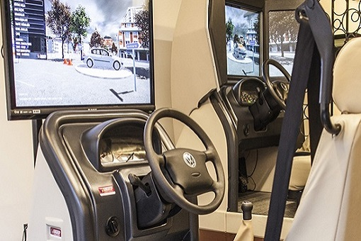
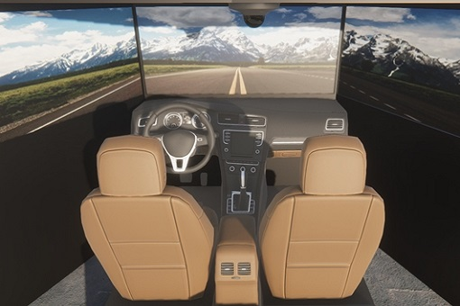
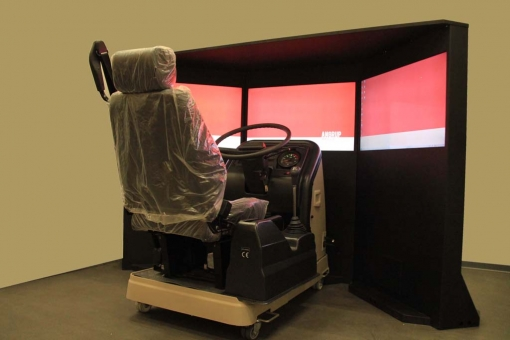
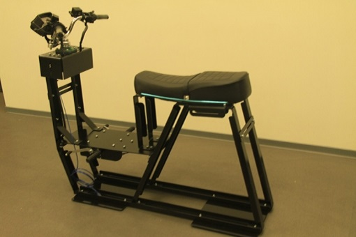
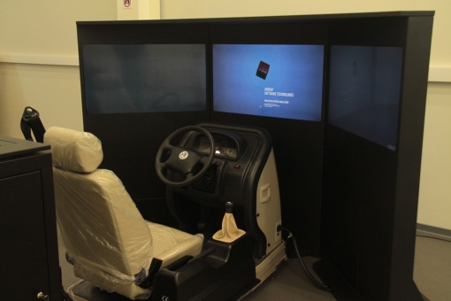
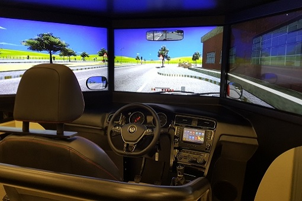
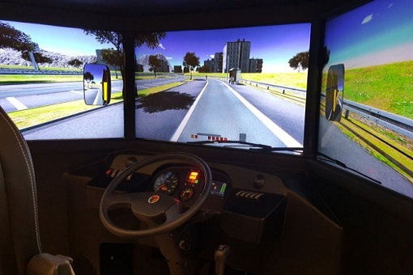
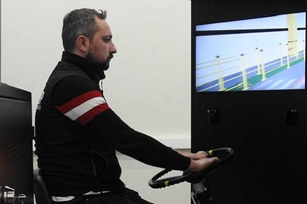
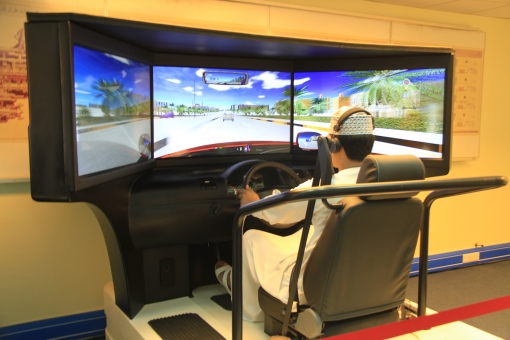
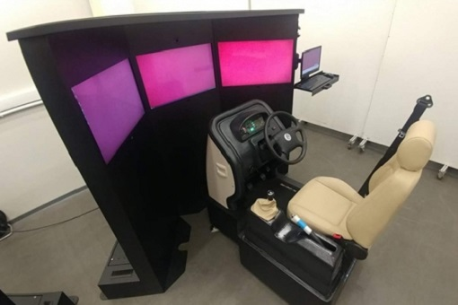

XV-CH01 Автомобилен тренажор
Нашият тренажор за леки автмобили е направен от оригинални части
на Volkswagen, за да се насладите на изключителен реализъм. Може да бъде използван с
един или три монитора.
.

XV-CH02 Автомобилен тренажор
Тренажора за леки автомобили съдържа всички условия на шофиране
с оригинални части от истински автомобил и е перфектен за добиване на различни умения в
шофирането.
.

XV-CH01 Тренажор за камиони
Тренажора за камиони е съставен от истински части на камион,
включващи абсолютно всички индикации по таблото, за да се упражнявате на максмиално
реалистични условия, с реалистични физики.
.

X-Bike Тренажор за мотор
Тренажорът за мотори е направен според изискванията на
автошколите, осигуряващ изключителна близост до реалните условия за шофиране и включващ
всички необходими индикации и части.
.

XV-CH01 Професионален автомобилен тренажор
Впуснете са в реалистичното шофиране с нашият Pro модел на тренажора за леки автомобили,
с още по-високо качество на материалите при изработката и седалките. Тренажорът е
снабден с реалистични физики.
.

XV-CH03 Втора генерация автомобилен тренажор
Втората генерация на тренажора за леки автомобили е със свръх
реализъм и включващ повече възможности и подобрения по екстериора и по-висок клас на
частите използвани при оборудването.
.

XV-CH03 Тренажор за тежкотоварни автомобили
Тренажора за тежкотоварни превозни средства е съставен от истински
части на автомобили, включващи абсолютно всички необходими уреди, за да се упражнявате
на максмиално реалистични условия, с реалистични физики.
.

XV-TW01 Тренажор за автомобил за пътна помощ
Тренажорът е изключително реалистичен благодарение на множеството
уреди,които помагат за по-добра подготовка, благодарение на частите от реални превозни
средства, множеството реалистични задачи за изпълнеие.
.

XV-CH03 Първа генерация автомобилен тренажор
Нашият тренажор е изграден с части от популярният VW Golf 5. Трите
монитаря с ъгъл от 135 градуса на виждане и нашия софтуер правят придобиването на опит и
умения изключително лесно и привикването към пътя става неосъзнателно.
.

XV-CH01 PRO RHD Автомобилен тренажор
Pro версията на автомобилния тренажор предразполага към повече
удобство и повееч функции на тренажора. Включват се части от бранда Volkswagen, за по
голям реализъм и усещани на реален автомобил с всички индикации и системи както при
модерните автомобили.
.